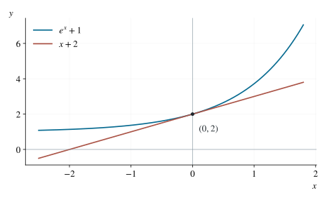

P0117 · 思维训练
已知商函数最大值反求参数
在实际取到最大值的点同时使用函数值和驻点条件，再验证全域上界。
1 题目
实参数 给出函数 ，定义域为 。若其最大值为 ，求 。

与 只在零点相等，且前者在全实轴上不小于后者。
2 提示
最大值为 包含两个条件：有一点取到 ，而且其余点的函数值不超过 。可以先用取等点寻找参数。
3 解答展开 / 收起
由于最大值必须被取到，我们可以在取等点同时使用函数值条件和导数条件；这样求出的参数仍需代回去，验证它确实给出全局最大值。
3.1 取等点与参数
设最大值在 取得。分母在 处非零，由连续性可取包含它的小开区间，使分母一直非零，所以 在这里可导。最大值条件给 ；除以正的 时差商非正，除以负的 时差商非负。左右极限相等，导数既非正又非负，因此 。
由 可得 。另一方面，商法则给出
在 处分母非零，而导数为零，故分子为零。用取等式替换 ，得到：
若第一因子 为零，取等式会使分母也为零，与 矛盾。因此只有 ，即 。指数函数严格递增且 ，所以 。再代入 ，得 ，从而唯一候选为 。
3.2 全局最大值
取 ，分母恒正。设 ，则 在零点两侧由负变正，所以 ，且仅在零点取等。因此
时取等，最大值确为一。故唯一参数为 。
4 评注
对于求出的参数，。分子非负且仅在 时为零，分母始终为正，因此最大值 在 唯一取得。